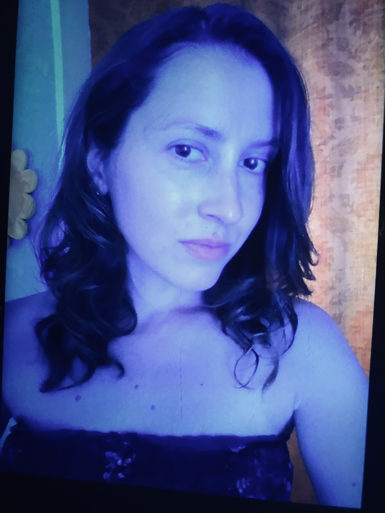
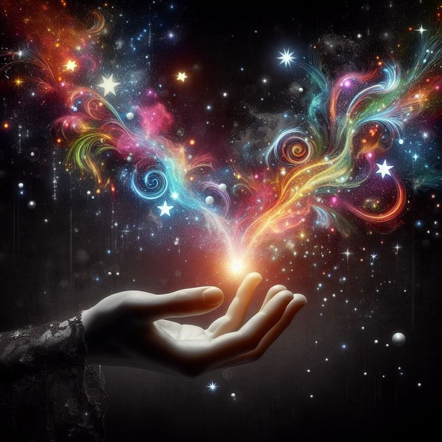

Лендинги
Сайты, которые не просто “есть”, а собирают внимание, держат ритм и ведут человека по смыслу.
Vibe Coder / Portfolio / Web & AI Experiences
Не просто “что-то сверстать”, а собрать ощущение, стиль, логику и подачу так, чтобы проект хотелось открыть, листать и запомнить.

Я работаю на стыке кода, визуала, UX и AI-инструментов.
Для меня сайт — это не набор блоков. Это ощущение от проекта, ритм, подача, структура и то, как человек чувствует себя внутри интерфейса.
Я делаю:
Мой подход — сделать быстро, красиво и не бездумно.
Чтобы проект не выглядел как очередной шаблон, собранный без вкуса и идеи.
Сайты, которые не просто “есть”, а собирают внимание, держат ритм и ведут человека по смыслу.
Страницы, которые показывают не только работы, но и стиль, характер и уровень.
Когда нужен не просто сайт, а ощущение: атмосфера, характер, настроение, подача.
Использую нейросети как инструмент ускорения и усиления идей, а не как замену мышлению.
Продумываю, как человек читает, куда смотрит, где теряется и где принимает решение.
Могу собрать сильную первую версию быстро, без месяцев бесконечных согласований.
Я смотрю не только на задачу, но и на ощущение, которое должен передавать проект.
Красивый сайт без логики — это просто красивая обёртка. Поэтому я собираю смысл, сценарий и путь пользователя.
Когда есть стиль и логика, проект собирается быстрее, точнее и выглядит сильно.
Четыре формата работы — от быстрого лендинга до концепт-сайта: каждый блок ниже с превью и кратким описанием задачи.
Одностраничник под digital-продукт: сильный первый экран, ритм блоков, акцент на атмосферу и мгновенное считывание оффера.

Личный сайт, который продаёт не только кейсы, но и характер: навигация по работам, тон подачи и ощущение «это мой уровень».
Промо-страница под воронку и запуск: понятный сценарий, доверие, CTA и связка с ботом или продуктом без визуального шума.
Концепт-сайт с упором на тренд, характер бренда и эффект «хочется показать друзьям»: не шаблон, а цельное впечатление.
Потому что я умею видеть проект целиком.
Не только:
но и:
Я соединяю: эстетика + структура + digital-мышление + скорость.
Но если честно — главный инструмент не стек, а вкус, насмотренность и умение собирать цельное впечатление.
Хороший сайт — это не когда “нормально сверстано”. Это когда у проекта появляется энергия, форма и ощущение, что он живой.
Могу помочь с концепцией, структурой, упаковкой и реализацией. От первого вайба до готовой страницы.